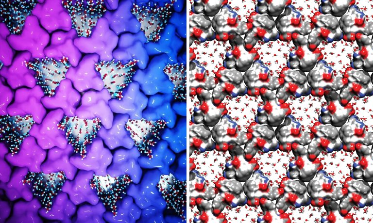
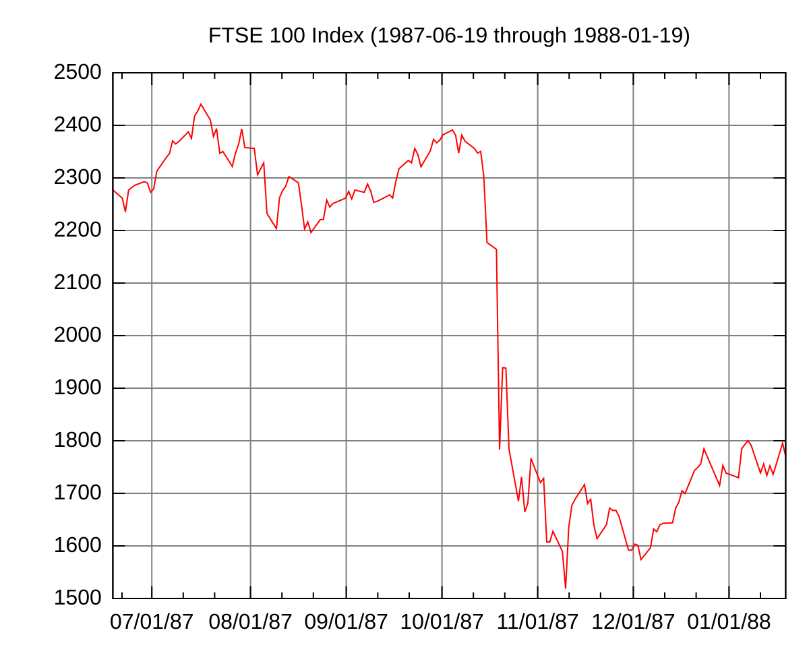

Inicio
Antes de iniciar o dia/noite, Lembre-se:a jornada de mil milhas começa com um único passo. Faça de cada momento uma oportunidade para crescer e conquistar.

"Faça o teu melhor, na condição que você tem, enquanto você não tem condições melhores para fazer melhor ainda." Mário Sérgio Cortella - Filósofo, escritor, educador e professor universitário.
Ciência🧬
Descoberta Surpreendente sobre a Água em Nanoescala💧
Cientistas fizeram uma descoberta significativa sobre a água em nanoescala, revelando que suas propriedades podem ser diferentes das conhecidas em escala macroscópica. A pesquisa mostra que, em dimensões nanométricas, a água apresenta um comportamento inesperado, como a capacidade de fluir mais rapidamente e ter uma estrutura molecular alterada. Essas descobertas podem abrir novas portas para a física e a química, possibilitando avanços em áreas como a nanotecnologia e a biomedicina. A compreensão dessas propriedades pode levar a inovações em diversos campos, desafiando conceitos estabelecidos sobre a água e suas interações
- Propriedades Incomuns da Água em Nanoescala: A água em dimensões nanométricas apresenta características diferentes da água em escala macroscópica, como maior fluidez e estrutura molecular alterada.
- Potencial para Avanços Científicos: Essa descoberta abre novas possibilidades para a física e a química, com aplicações potenciais em nanotecnologia e biomedicina.
- Desafio aos Conceitos Estabelecidos: A pesquisa questiona as noções convencionais sobre a água e suas interações, levando a uma compreensão mais profunda desse elemento essencial.
A descoberta surpreendente sobre a água em nanoescala revela propriedades incomuns, como maior fluidez e estrutura molecular alterada, em comparação com a água em escala macroscópica. Essa descoberta pode abrir portas para avanços científicos em áreas como nanotecnologia e biomedicina. A pesquisa também desafia conceitos estabelecidos sobre a água e suas interações, levando a uma compreensão mais profunda desse elemento essencial.
Tecnologia👨💻
Meta encerra robôs de IA semelhantes a celebridades
A Meta anunciou o encerramento de seus robôs de inteligência artificial que permitiam interações com avatares de celebridades, como Snoop Dogg e Paris Hilton. Esses personagens virtuais foram introduzidos para proporcionar uma experiência de conversa personalizada em aplicativos de mensagens, mas a empresa decidiu descontinuá-los para redirecionar seus esforços para uma nova plataforma chamada AI Studio.
O AI Studio, que atualmente está disponível apenas nos Estados Unidos, permitirá que usuários, incluindo criadores de conteúdo e celebridades, desenvolvam seus próprios personagens de IA. A Meta acredita que essa abordagem proporcionará uma experiência mais ampla e personalizada, permitindo que qualquer pessoa crie interações significativas por meio da inteligência artificial.
Um porta-voz da Meta mencionou que a empresa aprendeu muito com a experiência anterior, especialmente sobre como as pessoas utilizam a IA para se conectar e criar de maneiras únicas. A decisão de encerrar os robôs de celebridades reflete uma mudança estratégica da Meta em busca de inovação e maior acessibilidade na criação de personagens de IA.
Em resumo, a Meta está se afastando de avatares de celebridades para focar em uma plataforma mais inclusiva que permita a qualquer usuário criar suas próprias experiências de IA, destacando um movimento em direção à personalização e à interatividade.
É aquela antiga filosofia: tem que deixar uma coisa de lado para se aperfeiçoar em outra...
Financeiro💰
Recuperação após a "Black Monday"
A Bolsa de Valores brasileira (Ibovespa) apresentou uma recuperação significativa após um dia de perdas acentuadas, em meio a um clima de incerteza no mercado financeiro. No dia 6 de agosto de 2024, o índice subiu 1,36%, alcançando 112.000 pontos, após uma queda de 2,5% na sessão anterior. A valorização foi impulsionada por um otimismo renovado entre os investidores, especialmente com a expectativa de que o Comitê de Política Monetária (Copom) do Banco Central do Brasil mantenha a taxa Selic inalterada em sua próxima reunião.
O dólar também teve um desempenho positivo, com uma leve queda de 0,5% em relação ao real, sendo cotado a R$ 4,95. Esse movimento é atribuído à expectativa de estabilidade nas taxas de juros, que pode influenciar a confiança dos investidores e o fluxo de capital no país.
Os analistas destacam que a manutenção da Selic em 13,75% é crucial para a recuperação econômica e para a atração de investimentos. A decisão do Copom, prevista para o dia 9 de agosto, será um fator determinante para a continuidade da recuperação do mercado e para a confiança dos investidores.
Em resumo, a Bolsa brasileira se recuperou após perdas recentes, impulsionada pela expectativa de que o Copom mantenha a taxa de juros inalterada, enquanto o dólar apresentou leve queda. O cenário econômico permanece cauteloso, com a atenção voltada para as decisões do Banco Central e seu impacto sobre a confiança do mercado.
Política💬
Debate sobre Política Nacional de Refúgio
No dia 6 de agosto de 2024, a Comissão Mista Permanente Sobre Migrações Internacionais e Refugiados (CMMIR) do Congresso Nacional do Brasil realizou uma audiência pública para debater a construção da Política Nacional de Migração, Refúgio e Apatridia. O evento, solicitado pelo presidente da comissão, deputado Túlio Gadêlha, teve como objetivo discutir a organização da oferta de serviços, programas e ações voltadas para migrantes, refugiados e apátridas no país.
Durante a audiência, foram abordados temas como a importância de uma política estruturante que possa atender às necessidades desses grupos vulneráveis, considerando o aumento dos fluxos migratórios e a necessidade de proteção internacional. A comissão enfatizou que a nova política deve ser um divisor de águas, promovendo não apenas a acolhida, mas também a integração e a inclusão social desses indivíduos.
Os participantes da audiência tiveram a oportunidade de enviar perguntas e comentários por meio do portal e-Cidadania, promovendo um debate interativo. A CMMIR, composta por 12 senadores e 12 deputados federais, foi criada em 2019 e tem como missão acompanhar a situação dos refugiados e as dinâmicas migratórias nas fronteiras do Brasil.
A audiência pública sobre a Política Nacional de Migração, Refúgio e Apatridia destacou a necessidade de uma abordagem integrada e eficaz para atender as demandas de migrantes e refugiados, visando garantir seus direitos e promover sua inclusão na sociedade brasileira.
Extra:
Ideias para tornar sua Terça-feira mais especial:
- Banho relaxante: Crie um ambiente calmo com velas e música suave, e mergulhe em uma banheira com sais de banho.
- Meditação ou yoga: Dedique alguns minutos para praticar a mindfulness e aliviar o estresse.
- Leitura de um bom livro: Perca-se em uma história e deixe a imaginação fluir.
- Música relaxante: Crie uma playlist com suas músicas favoritas e relaxe.